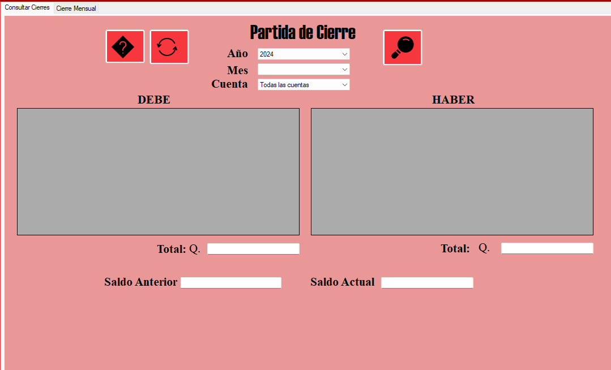

Protegiendo tu mundo digital, asegurando tu futuro
Formulario de Consultas

Botón Reporte: Muestra el reporte Actualizado de Todoslos
cierres guardados hasta el momento.
Botón Consultar: Una vez seleccionado un mes y una cuenta para consultar en su respectivo cierre (también puede ser
todas las cuentas) el formulario mostrará el resultado correspondiente al cierre.
Botón Actualizar: Actualiza y reinicia el formulario de consultas.
ComboBox de consulta:Parametrizan la consulta de los cierres por cuenta, año y mes.
DataGridViews:Imprimen los datos consultados, a la izquierda están los cargos de las cuentas y a la derecha los abonos.
Preguntas Frecuentes
¿Por qué no puedo modificar los datos de las cuentas? El formulario de Cierre Contable no es el indicado para modificar datos. Ese
es el formulario de pólizas.
¿Porque no puedo hacer un cierre anual inmediatamente? Porque se debe realizar un ejercicio de cierre contable por mes antes de este proceso.
¿Es necesario que yo haga el cierre anual? No, el programa genera el cierre Anual automaticamente.
¿Que pasa si una póliza se quedó sin ingresar luego de hacer el cierre? Se pierden sus datos, por eso es necesario que todas las pólizas sean ingresadas sin excepción alguna.